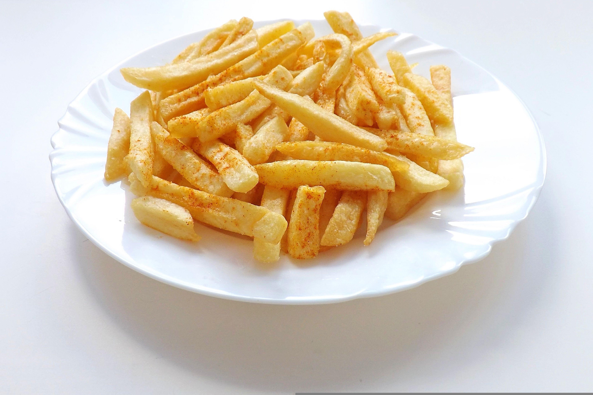

Home
French Fries

Image by Hans Benn on Pixabay
Description
This simple french fries recipe is really easy to make. In a few hours, make crispy, salty restaurant style french fries right at home.
Ingredients
- 2-3 Potatoes
- 1tbsp Corn flour
- 1tbsp Rice flour
- 1tsp Ginger powder
- 1tsp Red chilli powder
- Salt to taste
Steps
- Boil the potatoes for 3 minutes.
- Peel them and cut into 6-7 mm thick strips.
- Mix the corn flour and rice flour together.
- After the potatoes have cooled down, properly coat the potatoes with the flour mixture.
- Refrigerate the potatoes for a few hours.
- Heat oil in a wok at high heat.
- Deep fry the potatoes till golden brown.
- Drain excess oil from the fries and toss in ginger powder, red chilli powder and salt.